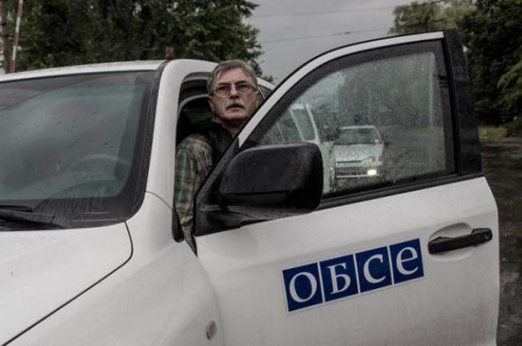
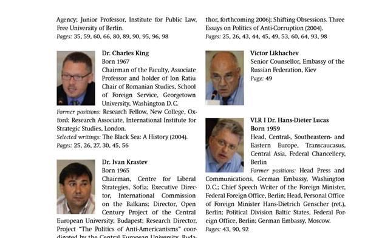

О «независимых» и «объективных» наблюдателях из России
Группа «ИС» фиксирует и отдельные случаи, когда возникают вопросы к конкретным гражданам России из числа якобы «независимых и объективных» наблюдателей ОБСЕ, пишет Дмитрий Тымчук в своей колонке для Espreso.tv.
Приведу только один пример.
Итак, в июне 2014 года представители мониторинговой миссии ОБСЕ посетили Славянск, который на тот момент находился под контролем террористов Гиркина, чтобы «составить объективную картину состояния города».Эта поездка стала информационным поводом для большинства российских средств массовой информации и подробно освещалась.
В частности, 27 июня на сайте РИА Новости появилась цитата одного из представителей мониторинговой миссии некого Виктора Лихачева, который сообщил: «Картина мрачная, разрушений много.Специалисты видят следы минометных обстрелов, разрушенные жилые дома и инфраструктуру.Я видел Славянск месяц назад, он был совсем другим»
Видео данного эпизода было удалено с сайта РИА Новости.Однако идентичный сюжет вышел и на телеканале LifeNews с комментарием Виктора Лихачева.


Данная информация была использована российскими СМИ для иллюстрации версии о том, что украинская армия якобы систематически обстреливает жилые кварталы.Чего на самом деле не было.На самом деле разрушения в Славянске были вызваны обстрелами самих террористов, что подтверждено массой фактов.
Интересно следующее.
Лихачев Виктор Витальевич (якобы «независимый наблюдатель») является… старшим советником Посольства Российской Федерации в Украине.Именно в таком качестве он был указан на официальном сайте Посольства.«Был указан», поскольку с 14 ноября 2014 года (а именно в это время, по странному совпадению, группа «ИС» заинтересовалась Лихачевым и обращалась за комментариями к его коллегам) эта страница заблокирована, однако все еще присутствует в кэше поисковика Гугл.
О принадлежности Лихачева к посольству РФ свидетельствует масса фактов.
Например, в мае 2013 года он был вызван в МИД Украины, который выразил протест в связи с некорректными высказываниями Генерального консула РФ в Симферополе Владимира Андреева в отношении крымских татар.В последствие Андреев был отозван МИД РФ с этого поста.
А еще в 2006 г. он принимал участие в круглом столе «Черное море между Россией и ЕС».В материалах круглого стола четко обозначен его статус – старший советник посольства РФ (второе фото).Теперь смотрим дальше.
21 апреля 2014 года специальный корреспондент «Русского Репортера» Дмитрий Великовский разместил на сайте свою статью «Трудовые будни ОБСЕ».
В данной статье Великовский описывает свою поездку совместно с другими журналистами и сотрудниками миссии ОБСЕ по районам Донецка.По словам Великовского, на одном из блок-постов они были задержаны боевиками, которые угрожали им расправой, если те не сотрут немедленно свои видеозаписи и отдадут боевикам карты памяти от видеокамер.
Великовский свидетельствует, что в разгар конфликта, когда на журналистов было направлено оружие, один из сотрудников миссии по имени Виктор обратился к террористам (цитата):
«Из машины выглядывает Виктор — он показывает синий паспорт: — МЕНЯ зовут Виктор Лихачев, я старший советник посольства России, дипломат, россиянин».Боевики никак не отреагировали на его слова и продолжили угрожать журналистам.
Т.е., действующий сотрудник российского посольства одновременно пользуется всеми полномочиями международного наблюдателя ОБСЕ!Представитель страны, которая аннексировала часть украинской территории и развязала войну, может свободно передвигаться, посещать, в том числе, военные объекты, собирать и передавать информацию противнику.
Скажите, кто-то верит, что данный «наблюдатель» сохранит объективность?Он будет фиксировать колонны бронетехники, поступающие из России?Он будет правдиво освещать обстрелы террористами жилых районов и убийства мирных граждан?У кого-то повернется язык назвать эту критику «необоснованной»?
И чтобы расставить точки над «і», укажу еще один факт.
17 августа 2007 года на одном из украинских сайтов вышла статья о том, что Виктор Лихачев подозревается в принадлежности к спецслужбам России.
Вполне может отказаться, что под прикрытием мандата ОБСЕ в Украине работает не просто дипломат, а агент российских спецслужб.Нужно комментировать, как это отразится на авторитете организации?Одним своим присутствием он способен помножить на ноль все усилия ОБСЕ продемонстрировать объективность.
Еще раз повторюсь.Мы за то, чтобы на Донбассе работала миссия ОБСЕ, чтобы с ее помощью был установлен реальный контроль над украинско-российской границей.Но в данной ситуации, согласимся, только очень наивный человек может рассчитывать на это.
Автор: Дмитрий Тымчук, группа «ИС».
Posted On: 2014-11-17T21:00:00
Content Date: 2014-11-17
Download Date: 2021-07-16
Document ID: L0C04FISW